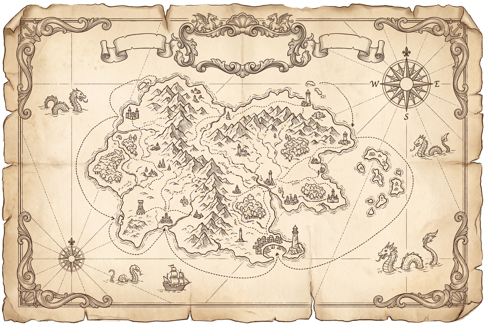
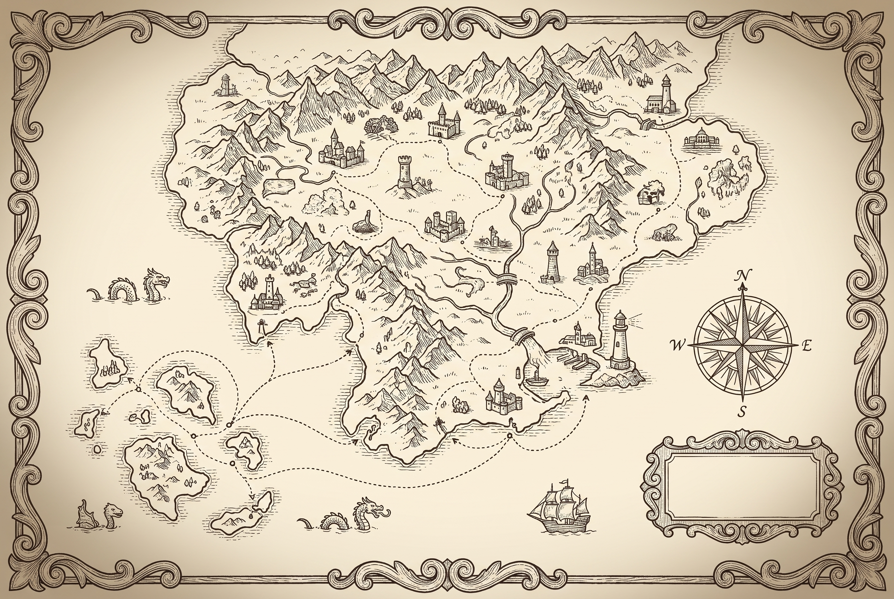
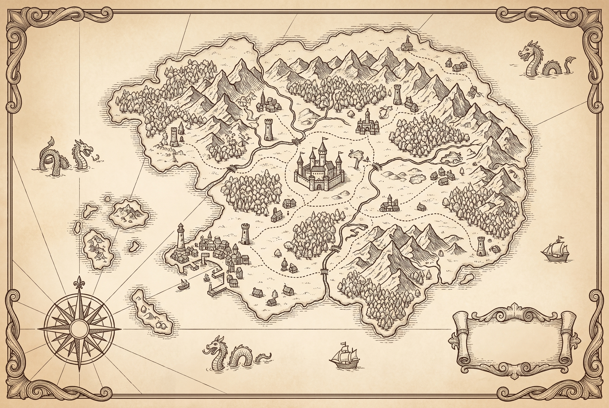

回到"一张画到位的图 + 叠你的真信息"这条路。三张古地图,严格你主站的铜版画皮,几乎没有乱码字、还留了空白绶带/卷轴放标题——正好当底图,你的站点/账号/联系方式后面我用真文字和点击热区叠上去。
我的偏好:B(最清爽、有大图例牌、路径带停靠点最好导航);想要最有冒险感选 A,想要最"童话小岛·一个家"选 C。



| 🏰 中心城堡 / 家 | 关于我 —— 小耳这个人(点它看全貌 / 日记) |
| 🗼 一片塔楼城镇区 | 作品 / 网站(弹药库 · 鲁班箱 · 走马灯 · 百物匣 · Omia · 艺术站 · 关系图) |
| ⛰ 一条山脉(七座峰) | xiaoercamera 馆藏七馆(音乐 · 相机 · 城市 · 跳舞 · 居家 · 弹珠 · 肖像) |
| 🏝 一串群岛(每岛一号) | 社媒 / 账号(X · 小红书 · 公众号 · IG · B站 · GitHub)—— "社媒群岛" |
| ⚓ 港口 / 灯塔 | 联系我(微信二维码 · 邮箱)—— 靠岸就能找到我 |
| ⣿ 虚线航路 / 道路 | 把它们连成网(呼应你总表里的"指向"关系) |
说明: 这三张是 2K 底图,选定后我会 ① 出 4K 高清 ② 在对应地标上叠真地名标签(铜版画字体)+ 点击热区,点一处地名进对应的站 ③ 标题/图例填进那块空白绶带 ④ 可选:鼠标悬停地标微微发亮、罗盘/海怪轻微浮动,让地图"活"一点(但仍是 2D,不折腾 3D)。
· 点任意地图放大看细节。